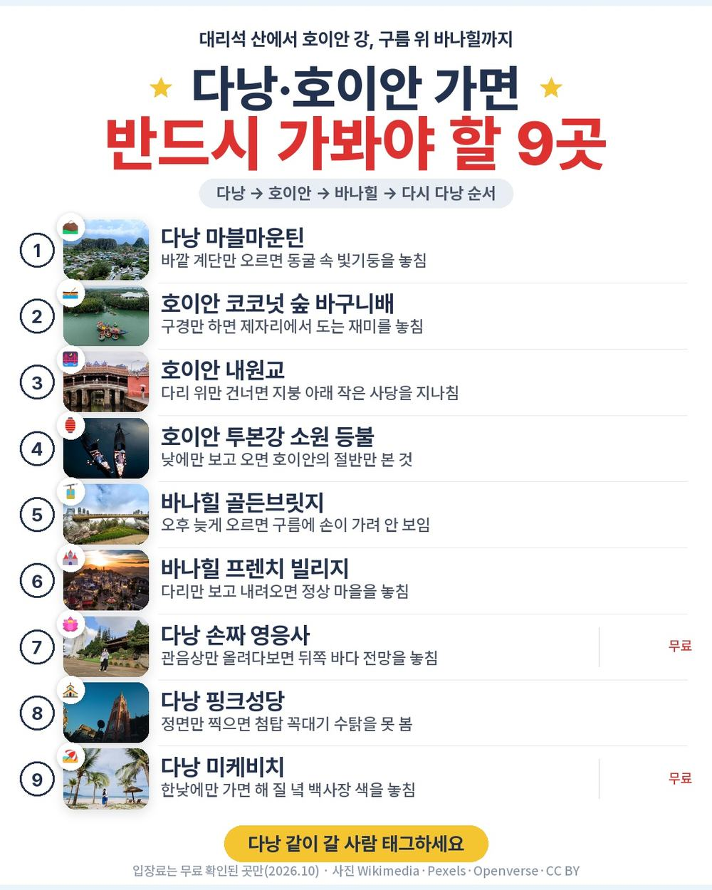
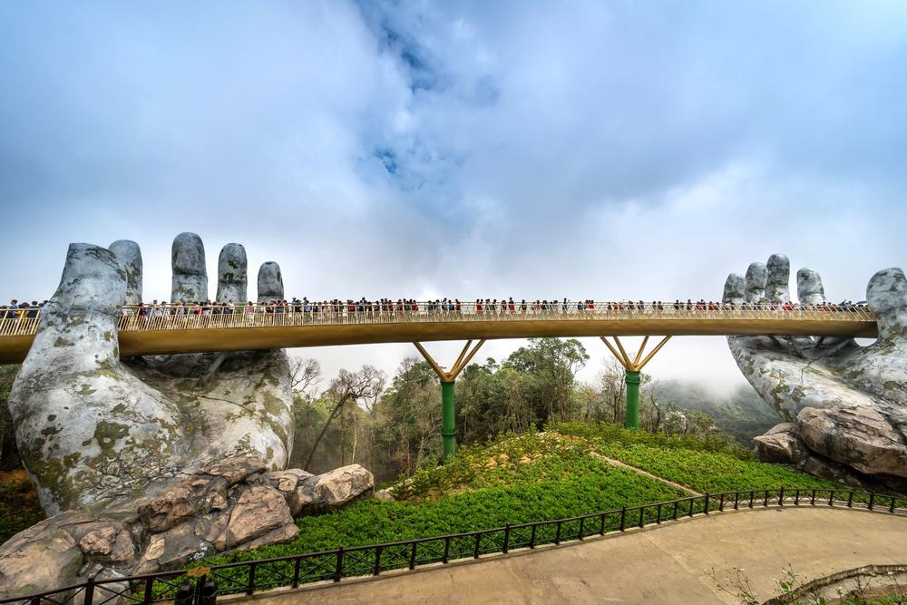
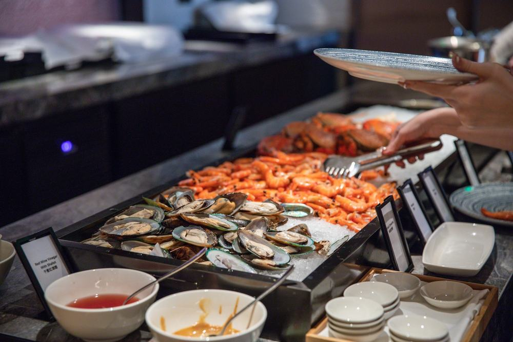
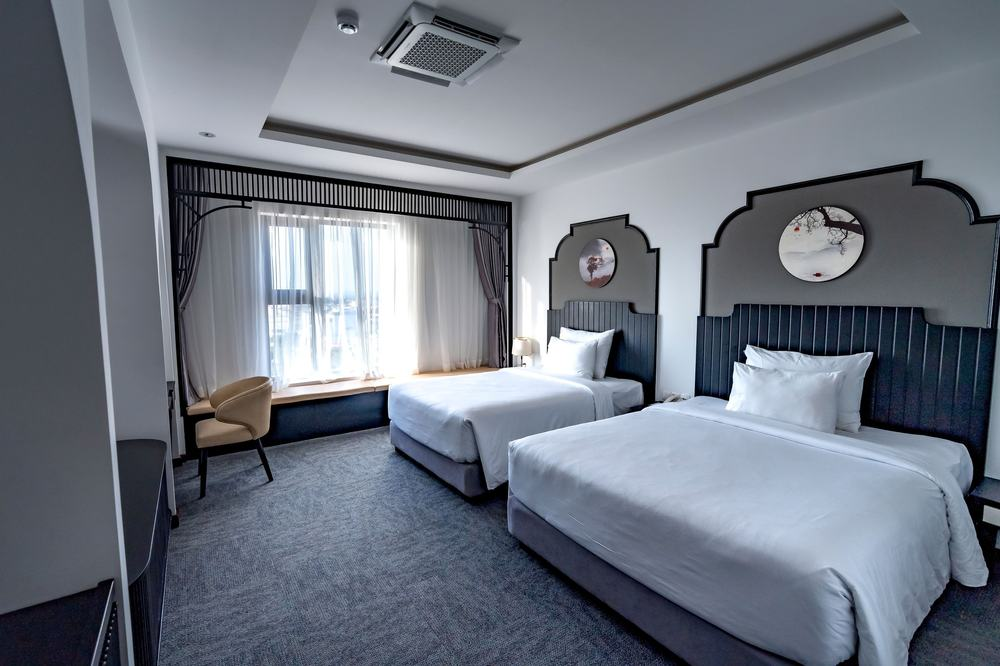
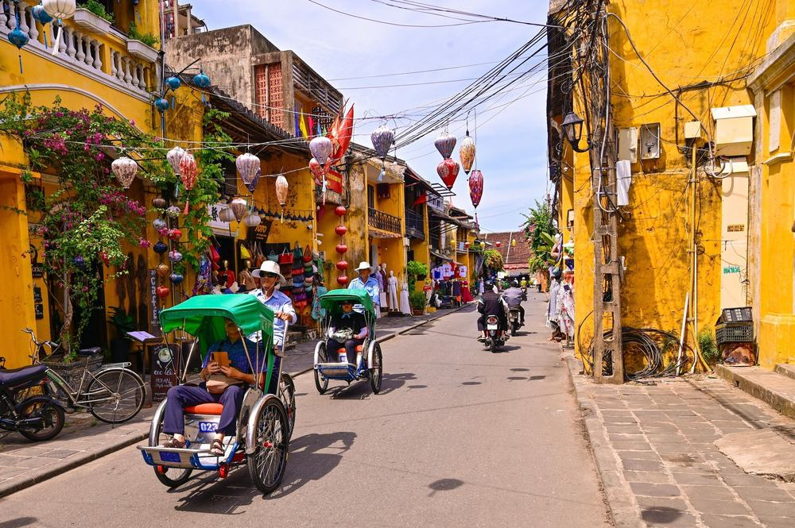
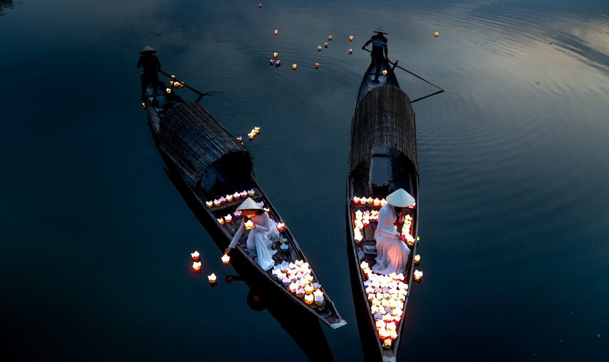
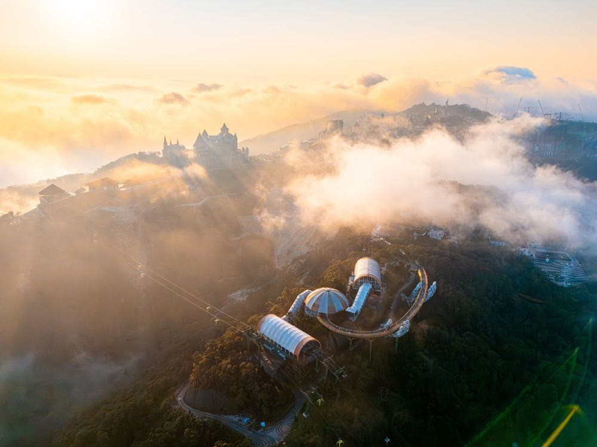
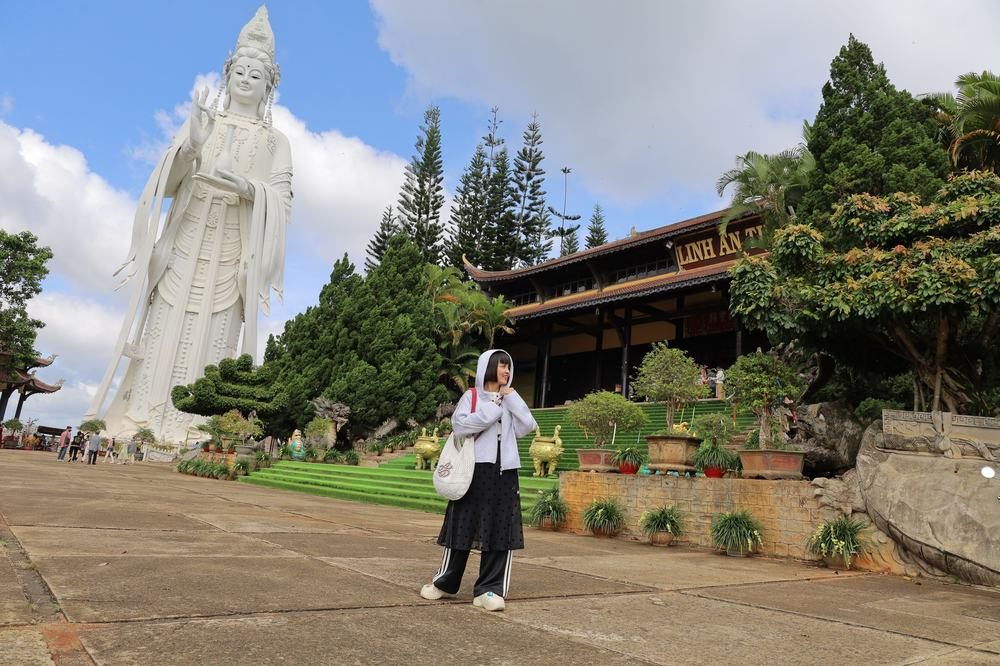

편한여행사 다낭 패키지 여행 94만원대, 쇼핑 0회에 마사지만 다섯 시간인 구성

부모님 모시고 다낭을 알아보다 보면 제일 먼저 걸리는 게 쇼핑센터 일정임. 값이 싼 상품일수록 커피·노니·침향 가게가 반나절씩 끼어 있음.
그러다 편한여행사 상품이 눈에 들어옴. 상품명부터 "대한항공 노쇼핑"이고, 일정표를 끝까지 봐도 쇼핑 가게가 한 곳도 없음. 대신 마사지가 세 번 들어 있음.
결론 — 추천. 대한항공 직항에 쇼핑 0회·선택관광 0개, 마사지 세 번(총 5시간)에 바나힐·호이안 야경까지 들어 있음. 다만 다낭을 최저가로만 가려는 분, 새벽 5시 인천 도착이 힘든 분, 자유시간이 길어야 하는 분은 아님.
94만 8,900원이 그만한 값인지, 현지에서 더 내는 돈은 얼마인지 원문을 하나씩 뜯어봤음.
| 항목 | 내용 |
|---|---|
| 가격 | 1인 948,900원 (성인 · 10월 말 출발 기준) |
| 여행사 | 편한여행사 |
| 항공 | 대한항공 직항 · 인천 저녁 출발 → 다낭 밤 도착 / 귀국은 밤 출발 → 인천 새벽 도착 |
| 숙소 | M 호텔 다낭 3박 · 한 호텔에서 세 밤 |
| 일정 | 3박 5일 · 미니버스 · 한국어 가이드 · 식사 9회 · 쇼핑 0 · 선택관광 0 |
| 가는 곳 | 마블마운틴 · 바구니배 · 호이안 올드타운 · 호이안 야경(소원배) · 바나힐 · 영응사 · 핑크성당 · 한시장 |
▶ 내 출발일 오늘 기준 요금 확인 (제휴 링크 · 예약 시 수수료를 받으며 가격은 같습니다)
▶ 10월 12일 기준 다낭 패키지 최저 27만 9천원부터 — 출발일별 값 한 화면에: 비교 페이지
| 순서 | 다루는 것 | 한 줄 결론 |
|---|---|---|
| 1 | 구성 뜯어보기 | 쇼핑 0·옵션 0, 현지 추가금은 가이드 경비 50달러 + 매너팁 |
| 2 | 일정 살펴보기 | 2일차가 마블마운틴·호이안 낮과 밤으로 가장 꽉 참 |
| 3 | 자유여행 VS 패키지 | 직접 짜면 93만원 | 패키지가 10만원쯤 더 들고, 그 값에 국적기·가이드·차량 |
1. 구성 뜯어보기
요약 — 대한항공 왕복·M 호텔 3박·식사 9회·입장료·마사지 3회·바나힐·바구니배·호이안 야경투어·보험이 들어 있음. 쇼핑과 선택관광은 0, 현지에서 더 내는 건 가이드·기사 경비 1인 50달러와 매너팁임.
1-1. 94만 8,900원에 들어 있는 것

포함 항목을 정리하면 이럼.
- 대한항공 직항 왕복 항공권 + 유류할증료 + 세금
- M 호텔 다낭 3박 (한 호텔 연박)
- 식사 9회 (2~4일차 아침·점심·저녁 전부)
- 관광지 입장료 · 미니버스 · 한국어 가이드
- 여행자보험
체험 쪽은 다섯 가지가 이름을 달고 들어 있음.
- 발마사지 1시간
- 아로마 핫스톤 전신마사지 2시간 × 2회
- 호이안 야경투어 (소원배 + 소원등 + 야시장)
- 바나힐 테마파크 입장권 · 바구니배 40분
이 상품의 차별점은 쇼핑을 빼고 그 시간에 마사지를 넣었다는 것임. 마사지만 합쳐 5시간이라, 이동이 많은 동남아 일정에서 쉬는 구간이 매일 생김.
출발일별 요금 확인하기
https://naver.me/FuNrWxrC
1-2. 식사 아홉 번, 자유식은 없음

식사는 9회이고 2~4일차 끼니가 전부 들어 있음. 점심은 현지식 맛집 벱꾸온, 바나힐 뷔페, 베트남 가정식 백반. 저녁은 호이안 윤식당 한식, 씨푸드 뷔페, 마지막 날 삼겹살.
점심·저녁에 자유식이 한 번도 없음. 한식이 두 번이라 현지 음식이 걱정되는 분도 무리 없음.
1-3. 호텔

호텔은 M 호텔 다낭 한 곳에서 세 밤임. 상품명에 '신축'이라고 붙은 새 호텔이고, 첫날 밤엔 웰컴 과일 바구니가 나옴. 2일차 오전은 자유시간이라 호텔 수영장에서 쉬거나 미케비치를 걸으면 됨.
바다 전망 방을 원하면 예약할 때 객실 변경을 따로 문의하는 게 좋음.
1-4. 현장에서 더 낼 돈
| 항목 | 금액 | 비고 |
|---|---|---|
| 가이드·기사 경비 | 약 134,000원 | 1인 50달러 × 2 |
| 핫스톤 마사지 팁 | 약 21,000원 | 1인 4달러 × 2회 × 2 |
| 바구니배 팁 | 약 3,000원 | 1인 1달러 × 2 |
| 선택관광 | 0원 | 선택관광 없음 |
| 식사 | 0원 | 점심·저녁 자유식 없음 |
| 합계 (2인) | 약 158,000원 | 상품가 189만 7,800원 + 약 16만원 = 약 205만원 |
두 사람이면 약 205만원, 한 사람으로 치면 약 103만원임. 환율은 1달러 약 1,342원으로 잡았음. 발마사지·식당 팁은 자율이라 넣지 않았음.
1절 자주 나오는 질문
Q. 쇼핑센터에 정말 안 가나요?
A. 안 감. 쇼핑 항목이 '없음'으로 적혀 있고, 일정표에도 쇼핑 가게가 없음. 4일차 오전 위즐 커피 클래스는 체험 일정임.
Q. 가이드 경비는 따로 내나요?
A. 냄. 1인 50달러를 현지에서 냄. 성인·소아 같음. 대신 선택관광이 없어서 그 뒤로 따로 걷는 돈은 매너팁 정도임.
Q. 마사지 팁은 얼마인가요?
A. 핫스톤 2시간은 회당 4달러, 바구니배는 1달러가 별도임. 발마사지 팁은 정해진 금액이 없음.
2. 일정 살펴보기
요약 — 1일차 저녁 비행기, 2일차 자유 오전 뒤 마블마운틴·바구니배·호이안 낮과 밤, 3일차 바나힐·핫스톤·씨푸드 뷔페, 4일차 영응사·핑크성당·한시장·핫스톤 뒤 밤 비행기, 5일차 새벽 인천 도착.
2-1. 하루하루 어디를 가나

| 일차 | 가는 곳 | 식사 | 숙소 |
|---|---|---|---|
| DAY 1 | 인천 18:40 출발 → 다낭 21:40 도착 → 호텔 체크인 · 웰컴 과일 | — | M 호텔 다낭 |
| DAY 2 | 오전 자유(수영장·미케비치) → 벱꾸온 → 마블마운틴 → 바구니배 40분 → 호이안 올드타운 → 발마사지 1시간 → 야경투어(소원배·소원등·야시장) | 조 호텔식 · 중 현지식 · 석 한식(윤식당) | M 호텔 다낭 |
| DAY 3 | 바나힐(케이블카 → 골든브릿지 → 정상 자유시간) → 뷔페 → 소금커피·에그커피 → 핫스톤 2시간 → 씨푸드 뷔페 | 조 호텔식 · 중 뷔페 · 석 씨푸드 뷔페 | M 호텔 다낭 |
| DAY 4 | 체크아웃 → 위즐 커피 클래스 → 가정식 → 영응사 → 핑크성당 → 한시장 → 핫스톤 2시간 → 삼겹살 → 공항 23:00 출발 | 조 호텔식 · 중 현지식 · 석 삼겹살 | 기내 |
| DAY 5 | 인천 05:20 도착 | — | — |
| 일차 | 버스 이동 | 걷기 | 포함 식사 |
|---|---|---|---|
| DAY 1 | 약 0.5시간 | 적음 | 포함 끼니 없음 |
| DAY 2 | 약 2시간 | 보통 | 조 호텔식 · 중 현지식 · 석 한식 |
| DAY 3 | 약 1.5시간 | 보통 | 조 호텔식 · 중 현지식 · 석 특별식 |
| DAY 4 | 약 1.5시간 | 적음 | 조 호텔식 · 중 특별식 · 석 한식 |
| DAY 5 | 거의 없음 | 적음 | 포함 끼니 없음 |
| 합계 | 약 5.5시간 | - | 9끼 (현지식 4 · 호텔식 3 · 한식 2) |
요약 — 버스 이동은 5일 동안 약 5.5시간, 포함 식사는 9끼(현지식 4 · 호텔식 3 · 한식 2)임. 가장 많이 걷는 날은 DAY 2임.
2-2. 2일차 — 느긋한 오전, 그리고 호이안의 밤

오전은 자유시간임. 밤 비행기로 들어온 다음 날이라 이 반나절이 꽤 큼. 점심 뒤 산 전체가 대리석인 마블마운틴, 그다음 코코넛 숲 물길에서 바구니배를 40분 탐.
호이안 올드타운을 걸은 뒤엔 발마사지 1시간. 해가 지면 소원배를 타고 투본강에 등불을 띄우고, 강 건너 안호이 야시장을 구경함. 저녁은 올드타운 한식집 윤식당의 숯불 제육과 강된장찌개.
2-3. 3일차 — 구름 위 바나힐, 그리고 두 시간 마사지

바나힐은 케이블카로 골든브릿지 역에 먼저 내려 거대한 손 위 다리를 걷고, 다시 케이블카로 정상에 올라 자유시간을 가지는 순서임. 점심은 산 위 뷔페.
내려오면 소금커피나 에그커피가 한 잔 나오고, 오후엔 아로마 핫스톤 2시간. 저녁은 미케비치 근처 씨푸드 뷔페로, 해산물·초밥·아시아 요리가 약 250가지임.
2-4. 4일차 — 시내 한 바퀴, 마사지 한 번 더

체크아웃 뒤 위즐 커피 클래스, 점심은 옛 가정집 같은 식당의 베트남식 백반. 오후엔 영응사, 분홍 외벽의 핑크성당, 현지 시장 한시장을 돎.
비행기 타기 직전에 핫스톤 2시간이 한 번 더 있음. 몸을 풀고 삼겹살로 저녁을 먹은 뒤 밤 11시 비행기를 타는 순서라, 새벽 도착이 조금 덜 힘듦.
2절 자주 나오는 질문
Q. 많이 걷나요?
A. 2일차 호이안 올드타운과 야시장이 가장 많이 걷는 구간임. 바나힐은 케이블카, 바구니배는 앉아서 타서 나머지 날은 걷는 양이 보통 이하임.
Q. 비행기는 몇 시인가요?
A. 대한항공 직항이고, 인천 18:40 출발 → 다낭 21:40 도착, 귀국은 다낭 23:00 출발 → 인천 05:20 도착임(원문 기준).
Q. 준비할 건 뭔가요?
A. 전압이 220V라 어댑터가 필요 없음. 환전은 미국 달러로 하고 베트남 동은 조금만(2만 동이 약 1천 원). 여권은 유효기간 6개월 이상 남아 있어야 함.
3. 자유여행 VS 패키지 | 직접 짜면 93만원
요약 — 같은 일정을 직접 짜면 1인 93만원쯤 듦. 패키지는 가이드 경비·팁을 더해 약 103만원이라 10만원쯤 더 들고, 그 값에 대한항공 직항·가이드·차량·예약 수고가 들어 있음.
3-1. 같은 일정을 직접 짜면

같은 일정을 혼자 짠다고 치고 항목별로 계산해 봄. 10월 말 출발, 2인 1실 1인분임. 항공 말고는 추정치라 근거 열에 적어 둠.
| 항목 | 금액 | 근거 |
|---|---|---|
| 인천–다낭 왕복 항공 | 346,000원 | ICN↔DAD 직항 왕복 1인 34만 6천원 (앞으로 두 달 직항 운임 하위 25% 값 · 2026-10-12 마이리얼트립 조회) |
| 호텔 3박 | 150,000원 | 2인 1실 1박 약 10만원의 1인분 × 3 (추정) |
| 식사 9회 | 160,000원 | 씨푸드 뷔페·바나힐 뷔페 포함 (추정) |
| 공항·호이안·바나힐 차량 | 70,000원 | 공항 왕복 + 호이안 왕복 + 바나힐 왕복, 2인 나눔 (추정) |
| 바나힐 입장권 (케이블카 포함) | 52,000원 | 현지 판매가 기준 (추정) |
| 마사지 3회 | 100,000원 | 발 1시간 + 핫스톤 2시간 × 2 (추정) |
| 바구니배·소원배·야경 | 30,000원 | 호이안 체험 묶음 (추정) |
| 여행자보험 · 유심 | 25,000원 | 5일 기준 |
| 가이드 | — | 자유여행은 없음 |
| 합계 | 약 933,000원 |
직접 짜실 분은 이 날짜 항공권부터 보세요 — https://myrealt.rip/v6rD9a (마이리얼트립 제휴 링크)
패키지는 948,900원에 가이드 경비 50달러와 매너팁을 더해 약 103만원임.
3-2. 그래서 뭐가 다른가
직접 짜는 쪽이 10만원쯤 덜 들지만, 항공이 저비용 항공 기준임. 대한항공 직항으로 맞추면 항공권부터 값이 올라감.
- 밤 9시 40분에 내리는 공항 픽업을 직접 잡아야 함
- 다낭 → 호이안 → 다낭, 바나힐 왕복 차량을 각각 예약
- 마사지 세 번·바구니배·소원배를 각각 따로 예약하고 결제
패키지는 이 전부가 미니버스 한 대로 붙고, 한국어 가이드가 붙음. 자유여행 계산표에 가이드 행이 비어 있는 게 그 뜻임 — 0원이 아니라 살 수 없는 것임.
3-3. 어느 쪽이 맞나
| 자유여행이 맞음 | 패키지가 맞음 |
|---|---|
| 한 푼이라도 아끼는 게 우선임 | 국적기 직항이 편함 |
| 그랩·현지 투어 예약이 익숙함 | 이동·예약을 맡기고 싶음 |
| 미케비치에서 쉬는 게 목적임 | 다낭·호이안·바나힐을 한 번에 볼 것임 |
| 귀국을 낮 비행기로 고르고 싶음 | 쇼핑 없이 쉬엄쉬엄 돌고 싶음 |
3절 자주 나오는 질문
Q. 자유여행이 더 싸지 않나요?
A. 계산해 보면 자유여행이 약 93만원, 패키지가 현지 경비·팁을 더해 약 103만원임. 다만 자유여행 항공은 저비용 항공 값이라, 대한항공으로 맞추면 차이가 줄어듦.
Q. 같은 다낭인데 더 싼 패키지도 있지 않나요?
A. 있음. 50만원대 다낭 상품도 있음. 대신 그런 상품은 쇼핑 일정이 들어 있거나 저비용 항공인 경우가 많아서, 무엇을 우선할지로 고르면 됨.
Q. 비자가 필요한가요?
A. 관광 목적이면 비자가 필요 없음. 다만 베트남 출국 뒤 30일 안에 다시 들어가면 비자가 필요함.
마무리
정리하면 이럼.
추천함. 94만 8,900원에 대한항공 직항, M 호텔 다낭 3박, 식사 9회, 바나힐 골든브릿지, 호이안 낮과 밤, 바구니배, 마사지 세 번(5시간)이 들어 있음. 쇼핑도 선택관광도 없고, 현지에서 더 내는 건 가이드 경비 50달러와 매너팁임.
이런 분은 고르면 안 됨. 다낭을 최저가로만 가려는 분, 새벽 5시 인천 도착이 힘든 분, 자유시간이 길어야 하는 분.
| 맞는 사람 | 안 맞는 사람 |
|---|---|
| 쇼핑센터 일정이 싫음 | 최저가가 우선임 |
| 국적기 직항을 원함 | 새벽 도착이 힘듦 |
| 마사지로 쉬어 가고 싶음 | 자유시간이 길어야 함 |
걸리는 점이 있긴 한데 상품 흠이라기보다 맞는 사람과 안 맞는 사람을 가르는 조건에 가까움.
오늘 기준 출발일별 요금 보기
https://naver.me/FuNrWxrC
같은 목적지 다른 여행사 패키지, 쇼핑·선택관광·가이드 경비까지 비교
https://pkg-lab.com/go/?q=%EB%8B%A4%EB%82%AD&utm_source=blog&utm_medium=post&utm_campaign=daily
함께 보면 좋은 글
모두투어 하와이 패키지 여행 323만원대, 와이키키 오션프런트 4박에 랍스터까지?
https://blog.naver.com/robotnady10/224437709369
노랑풍선 상하이 패키지 여행 94만 9천원, 추가금 진짜 없을까?
https://blog.naver.com/robotnady10/224436862236
이 글에는 네이버·마이리얼트립 제휴 링크가 포함되어 있으며, 링크를 통해 예약하시면 일정 수수료를 받습니다. 가격은 동일합니다. 가격과 구성은 2026년 10월 12일 확인 기준이며 출발일에 따라 달라질 수 있습니다.
▶ 이 상품, 영상으로 보기 (유튜브)
▶ 다낭 패키지 오늘 값 나란히 비교
▶ 같은 목적지 다른 여행사 패키지, 쇼핑·선택관광·가이드 경비까지 비교: pkg-lab.com
사진 출처 (저작자 · 라이선스):
그 밖의 사진: Pexels
쇼츠·클립 영상과 사진:
🌉 Drone Tour at Cau Vang – The Breathtaking Golden — Dr. Jon's Desk (YouTube, CC BY) 원본
Hoi An's Glowing Tradition: Lanterns On The River — World Wide Timelapse (YouTube, CC BY) 원본
MARBLE MOUNTAIN DA NANG: Bird's Eye View Drone Tou — Operation Da Nang (YouTube, CC BY) 원본
Boats with lanterns on the Thu Bon river IMG 3864 — CC BY-SA 4.0 (Wikimedia Commons) 원본

Vietnam🇻🇳- My Khe Beach in Danang | Aerial View | — ming Worldwide (YouTube, CC BY) 원본
Dragon Bridge Show With Drone Air Footage Da Nang — Jason Michael Phillips (YouTube, CC BY) 원본